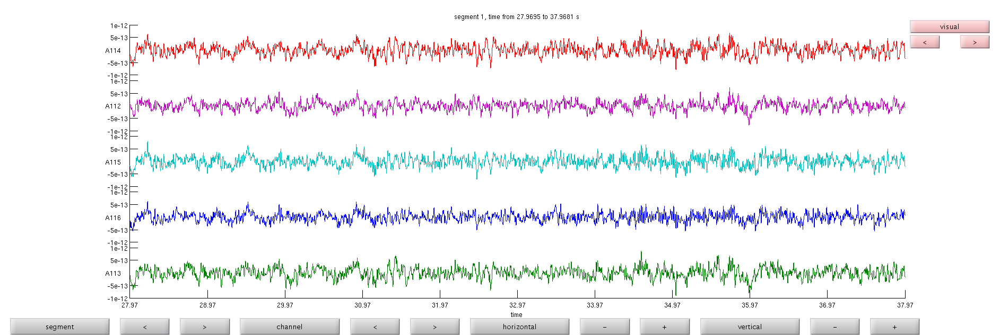
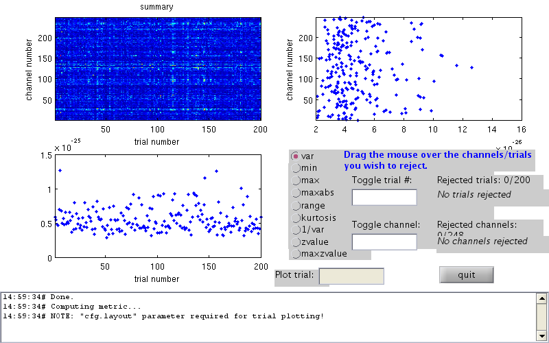
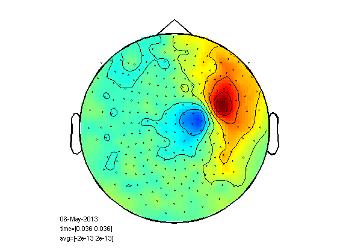
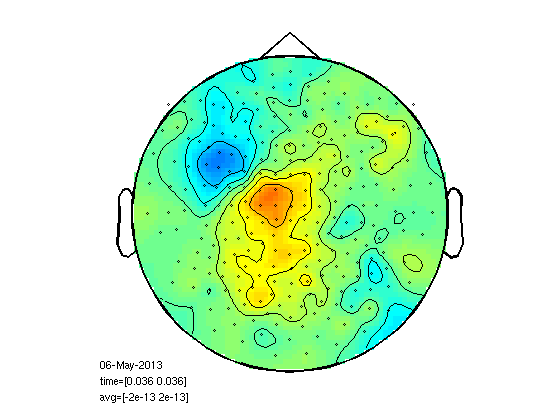
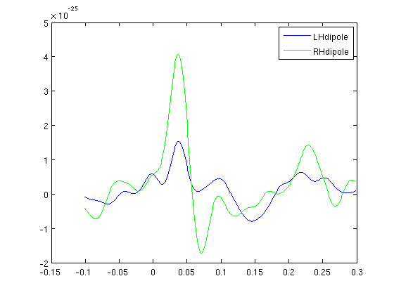
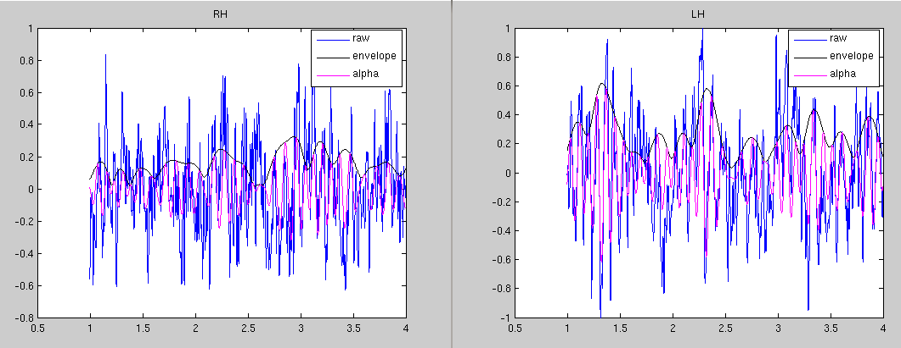
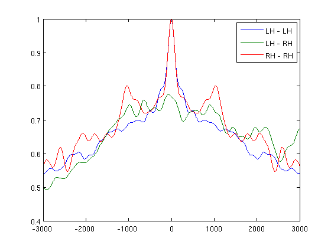
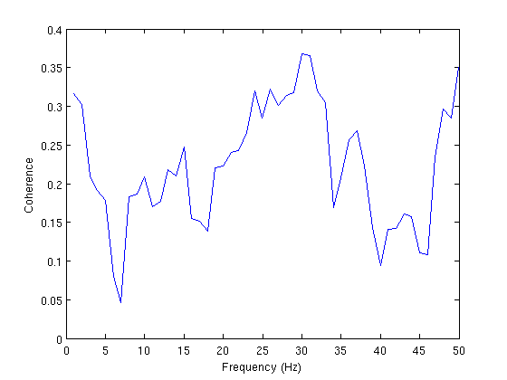
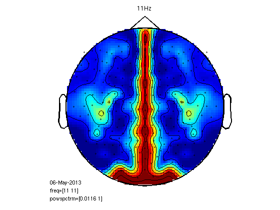
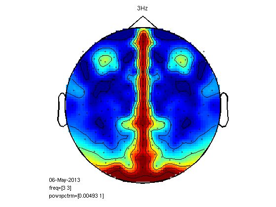

Connectivity
Contents
- Read raw data, rest, eyes open.
- View the data
- Warning! cleaning data with PCA introduced false synchrony to dipoles
- Read somatosensory evoked responses.
- Averaging left and right responses separately
- Plot left finger response
- Plot right finger response
- Head model
- Dipole fit
- Plot dipole timecourse
- Now see the somatosensory cortex activation in the rest state (Mu).
- Make Hilbert envelope
- check correlations (don't expect much)
- let's check cross correlation for absolute MEG data
- now for alpha hilbert envelopes
- Coherence
- Another approach to left-right coherence
- Compute coherence for pairs of voxels with SAMwts
Read raw data, rest, eyes open.
cd somsens fileName='hb_c,rfhp0.1Hz'; cfg=[]; cfg.dataset=fileName; cfg.trialdef.eventtype='TRIGGER'; cfg.trialdef.prestim=0; cfg.trialdef.poststim=120; cfg.trialdef.offset=0; cfg.trialfun='BIUtrialfun'; cfg.trialdef.eventvalue= 90; cfg.channel='MEG'; cfg=ft_definetrial(cfg); cfg.padding=0.5; cfg.bpfilter='yes'; cfg.bpfreq=[1 90]; cfg.demean='yes'; cfg.continuous='yes'; cfg.channel='MEG'; eyesOpen=ft_preprocessing(cfg);
evaluating trialfunction 'BIUtrialfun'
reading header...
applying digital weights in the gradiometer balancing matrix
undoing the Supine balancing
reading events from file...
applying digital weights in the gradiometer balancing matrix
undoing the Supine balancing
found 894 events
created 1 trials
the call to "ft_definetrial" took 3 seconds and an estimated 0 MB
applying digital weights in the gradiometer balancing matrix
undoing the Supine balancing
processing channel { 'A22' 'A2' 'A104' 'A241' 'A138' 'A214' 'A71' 'A26' 'A93' 'A39' 'A125'
reading and preprocessing
reading and preprocessing trial 1 from 1
the call to "ft_preprocessing" took 5 seconds and an estimated 461 MB
View the data
see the onset of alpha for A113, A114 and A115
cfgb=[]; cfgb.layout='4D248.lay'; cfgb.continuous='yes'; cfgb.event.type=''; cfgb.event.sample=1; cfgb.blocksize=10; cfgb.viewmode='vertical'; cfgb.ylim=[-1e-12 1e-12]; cfgb.channel={'A112','A113','A114','A115','A116'}; comppic=ft_databrowser(cfgb,eyesOpen);
the input is raw data with 248 channels and 1 trials detected 0 visual artifacts redrawing with viewmode vertical fetching data... done fetching artifacts... done preprocessing data... done the call to "ft_prepare_layout" took 0 seconds and an estimated 462 MB plotting artifacts... plotting events... plotting data... done the call to "ft_databrowser" took 7 seconds and an estimated 462 MB 
Warning! cleaning data with PCA introduced false synchrony to dipoles
do not clean artifacts with component analysis before running connectivity analysis
Read somatosensory evoked responses.
reject bad trials
cfg=[]; cfg.dataset=fileName; cfg.trialdef.eventtype='TRIGGER'; cfg.trialdef.prestim=0.1; cfg.trialdef.poststim=0.3; cfg.trialdef.offset=-0.1; cfg.trialfun='BIUtrialfun'; cfg.trialdef.eventvalue= [104,102]; %left index finger cfg1=ft_definetrial(cfg); cfg1.demean='yes'; cfg1.baselinewindow=[-0.1 0]; cfg1.bpfilter='yes'; cfg1.bpfreq=[3 30]; cfg1.channel='MEG'; cfg1.feedback='no'; somsens=ft_preprocessing(cfg1); cfg=[]; cfg.method='summary'; cfg.channel='MEG'; cfg.alim=1e-12; somsensCln=ft_rejectvisual(cfg, somsens);
evaluating trialfunction 'BIUtrialfun'
reading header...
applying digital weights in the gradiometer balancing matrix
undoing the Supine balancing
reading events from file...
applying digital weights in the gradiometer balancing matrix
undoing the Supine balancing
found 894 events
created 200 trials
the call to "ft_definetrial" took 3 seconds and an estimated 0 MB
applying digital weights in the gradiometer balancing matrix
undoing the Supine balancing
processing channel { 'A22' 'A2' 'A104' 'A241' 'A138' 'A214' 'A71' 'A26' 'A93' 'A39' 'A125' 'A20'
the call to "ft_preprocessing" took 6 seconds and an estimated 116 MB
the input is raw data with 248 channels and 200 trials
showing a summary of the data for all channels and trials
computing metric [--------------------------------------------------------/]
196 trials marked as GOOD, 4 trials marked as BAD
248 channels marked as GOOD, 0 channels marked as BAD
the following trials were removed: 6, 146, 157, 181
the call to "ft_rejectvisual" took 53 seconds and an estimated 1 MB

Averaging left and right responses separately
cfg=[];
cfg.feedback='no';
cfg.trials=find(somsensCln.trialinfo==102);
rightInd=ft_timelockanalysis(cfg,somsensCln);
cfg.trials=find(somsensCln.trialinfo==104);
leftInd=ft_timelockanalysis(cfg,somsensCln);
the input is raw data with 248 channels and 196 trials selecting 99 trials selecting 99 trials the call to "ft_timelockanalysis" took 0 seconds and an estimated 0 MB the input is raw data with 248 channels and 196 trials selecting 97 trials selecting 97 trials the call to "ft_timelockanalysis" took 0 seconds and an estimated 0 MB
Plot left finger response
select which channels to use for dipole fit
cfg=[]; cfg.layout='4D248.lay'; cfg.interactive='yes'; cfg.zlim=[-2e-13 2e-13]; cfg.xlim=[0.036 0.036]; figure; ft_topoplotER(cfg,leftInd);
reading layout from file 4D248.lay the call to "ft_prepare_layout" took 0 seconds and an estimated 0 MB the call to "ft_topoplotTFR" took 0 seconds and an estimated 0 MB the call to "ft_topoplotER" took 0 seconds and an estimated 0 MB
Plot right finger response
here too you have to select channels
figure; ft_topoplotER(cfg,rightInd);
reading layout from file 4D248.lay the call to "ft_prepare_layout" took 0 seconds and an estimated 0 MB the call to "ft_topoplotTFR" took 0 seconds and an estimated 0 MB the call to "ft_topoplotER" took 0 seconds and an estimated 0 MB
Head model
if exist('headmodel.mat','file') load headmodel else [vol,grid,mesh,M1]=headmodel_BIU([],[],[],[],'localspheres'); save headmodel vol grid mesh M1 end
Dipole fit
Here you use the channels selected at " Plot right finger response "
channelRH = {'A1', 'A2', 'A3', 'A4', 'A12', 'A13', 'A14', 'A15', 'A16', 'A17', 'A28', 'A29', 'A30', 'A31', 'A32', 'A33', 'A34', 'A35', 'A50', 'A51', 'A52', 'A53', 'A54', 'A55', 'A56', 'A57', 'A58', 'A78', 'A79', 'A80', 'A81', 'A82', 'A83', 'A84', 'A85', 'A86', 'A111', 'A112', 'A113', 'A114', 'A115', 'A116', 'A117', 'A144', 'A145', 'A146', 'A147', 'A148', 'A171', 'A172', 'A173', 'A174', 'A175', 'A193', 'A194', 'A210', 'A211'};
%channelRH = {'A11', 'A26', 'A27', 'A40', 'A41', 'A42', 'A43', 'A44', 'A45', 'A46' ... };
channelLH = {'A1', 'A2', 'A3', 'A7', 'A8', 'A9', 'A10', 'A11', 'A12', 'A21', 'A22', 'A23', 'A24', 'A25', 'A26', 'A27', 'A40', 'A41', 'A42', 'A43', 'A44', 'A45', 'A46', 'A65', 'A66', 'A67', 'A68', 'A69', 'A70', 'A71', 'A94', 'A95', 'A96', 'A97', 'A98', 'A99', 'A127', 'A128', 'A129', 'A155', 'A156', 'A157'};
t=0.0355;
cfg5 = [];
cfg5.latency = [t t];
cfg5.numdipoles = 1;
cfg5.vol=vol;
cfg5.feedback = 'textbar';
cfg5.gridsearch='yes';
cfg5.grad=ft_convert_units(leftInd.grad,'mm');
cfg5.grid=grid;
cfg5.channel=channelRH;
RHdip = ft_dipolefitting(cfg5, leftInd);
cfg5.channel=channelLH;
LHdip = ft_dipolefitting(cfg5, rightInd);
% plot dipoles
hs=ft_read_headshape('hs_file');
hs=ft_convert_units(hs,'mm');
hsx=hs.pnt(:,1);hsy=hs.pnt(:,2);hsz=hs.pnt(:,3);
figure;plot3(hsx,hsy,hsz,'r.');hold on;
ft_plot_dipole(LHdip.dip.pos,LHdip.dip.mom,'units','mm','color','b')
ft_plot_dipole(RHdip.dip.pos,RHdip.dip.mom,'units','mm','color','g')
converting units from 'm' to 'mm'
the input is timelock data with 248 channels and 407 timebins
using headmodel specified in the configuration
Your data and configuration allow for multiple sensor definitions.
Warning: using gradiometers specified in the configuration\n
selected 57 channels
selected 1 topographies
creating dipole grid based on user specified dipole positions
3480 dipoles inside, 795 dipoles outside brain
the call to "ft_prepare_sourcemodel" took 0 seconds and an estimated 0 MB
Warning: The input units are unknown for points and S/unknown for conductivity
scanning grid [------------------------------------------------------------]
found minimum after scanning on grid point [8.74663 -25.071 79.9769]
First-order
Iteration Func-count f(x) Step-size optimality
0 4 0.0724747 0.0021
1 20 0.0689463 820 0.00155
2 28 0.0672847 0.408057 0.00155
3 32 0.0666039 1 0.000863
4 36 0.0662763 1 3.6e-05
5 40 0.0662757 1 7.09e-06
6 44 0.0662756 1 7.1e-06
7 48 0.0662754 1 1.74e-06
8 52 0.0662754 1 3.06e-07
9 56 0.0662754 1 7.75e-09
10 72 0.0662754 0.0354727 3.36e-09
Local minimum possible.
fminunc stopped because the size of the current step is less than
the default value of the step size tolerance.
found minimum after non-linear optimization on [3.60683 -26.2694 78.6596]
the call to "ft_dipolefitting" took 8 seconds and an estimated 0 MB
the input is timelock data with 248 channels and 407 timebins
using headmodel specified in the configuration
Your data and configuration allow for multiple sensor definitions.
Warning: using gradiometers specified in the configuration\n
selected 42 channels
selected 1 topographies
creating dipole grid based on user specified dipole positions
3480 dipoles inside, 795 dipoles outside brain
the call to "ft_prepare_sourcemodel" took 0 seconds and an estimated 0 MB
scanning grid [------------------------------------------------------------]
found minimum after scanning on grid point [9.45348 34.1831 87.5663]
First-order
Iteration Func-count f(x) Step-size optimality
0 4 0.022875 0.00155
1 20 0.0212886 820 0.00152
2 24 0.0200368 1 0.000904
3 28 0.0195517 1 0.000273
4 32 0.019477 1 0.000289
5 36 0.0193226 1 0.000144
6 40 0.0193142 1 4e-05
7 44 0.0193134 1 6.9e-07
8 48 0.0193134 1 8.01e-09
9 52 0.0193134 1 4.05e-10
Local minimum found.
Optimization completed because the size of the gradient is less than
the selected value of the function tolerance.
found minimum after non-linear optimization on [7.47257 37.7573 89.221]
the call to "ft_dipolefitting" took 7 seconds and an estimated 0 MB
converting units from 'm' to 'mm'

Plot dipole timecourse
cfg=[];cfg.channel=channelLH; dataLH=ft_preprocessing(cfg,rightInd); cfg.channel=channelRH; dataRH=ft_preprocessing(cfg,leftInd); timecourseLH=LHdip.dip.pot'*dataLH.avg; timecourseRH=RHdip.dip.pot'*dataRH.avg; figure; plot(dataLH.time,timecourseLH,'b'); hold on; plot(dataLH.time,timecourseRH,'g'); legend('LHdipole','RHdipole');
Warning: the trial definition in the configuration is inconsistent with the actual data Warning: reconstructing sampleinfo by assuming that the trials are consecutive segments of a continuous recording preprocessing preprocessing trial 1 from 1 the call to "ft_preprocessing" took 0 seconds and an estimated 0 MB preprocessing preprocessing trial 1 from 1 the call to "ft_preprocessing" took 0 seconds and an estimated 0 MB
Now see the somatosensory cortex activation in the rest state (Mu).
choose channels for data display
cfg=[];cfg.channel=channelLH; dataLH=ft_preprocessing(cfg,eyesOpen); cfg.channel=channelRH; dataRH=ft_preprocessing(cfg,eyesOpen); % time window with no MOG, 65 to 75s smp1=nearest(dataLH.time{1,1},65); smp2=nearest(dataLH.time{1,1},75); timecourseLH=LHdip.dip.pot'*dataLH.trial{1,1}(:,smp1:smp2); timecourseRH=RHdip.dip.pot'*dataRH.trial{1,1}(:,smp1:smp2); timecourseLH=timecourseLH/max(abs(timecourseLH)); timecourseRH=timecourseRH/max(abs(timecourseRH)); figure1=figure; set(figure1,'position',[100,100,1500,600]) plot(eyesOpen.time{1,1}(:,smp1:smp2),timecourseLH,'b'); hold on; plot(eyesOpen.time{1,1}(:,smp1:smp2),timecourseRH+1.5,'g');
preprocessing preprocessing trial 1 from 1 the call to "ft_preprocessing" took 0 seconds and an estimated 0 MB preprocessing preprocessing trial 1 from 1 the call to "ft_preprocessing" took 0 seconds and an estimated 0 MB

Make Hilbert envelope
vs=eyesOpen;
vs.trial{1,1}=[timecourseLH;timecourseRH];
vs.label={'Ldipole','Rdipole'};
cfg=[];
cfg.bpfilter='yes';
cfg.bpfreq=[7 13];
vsAlpha=ft_preprocessing(cfg,vs);
cfg.hilbert='yes';
vsHilb=ft_preprocessing(cfg,vs);
% plot the hilbert envelope and the data for the RH dipole
t1=1;t2=4; %sec
samp=round(1017.25.*[t1 t2])
plot(vsHilb.time{1,1}(1,samp(1):samp(2)),vs.trial{1,1}(1,samp(1):samp(2)),'b');
hold on;
plot(vsHilb.time{1,1}(1,samp(1):samp(2)),vsHilb.trial{1,1}(1,samp(1):samp(2)),'k');
plot(vsHilb.time{1,1}(1,samp(1):samp(2)),vsAlpha.trial{1,1}(1,samp(1):samp(2)),'m');
title('RH')
legend('raw','envelope','alpha')
figure; % now for the LH
plot(vsHilb.time{1,1}(1,samp(1):samp(2)),vs.trial{1,1}(2,samp(1):samp(2)),'b');
hold on;
plot(vsHilb.time{1,1}(1,samp(1):samp(2)),vsHilb.trial{1,1}(2,samp(1):samp(2)),'k');
plot(vsHilb.time{1,1}(1,samp(1):samp(2)),vsAlpha.trial{1,1}(2,samp(1):samp(2)),'m');
title('LH')
legend('raw','envelope','alpha')
preprocessing
preprocessing trial 1 from 1
the call to "ft_preprocessing" took 0 seconds and an estimated 0 MB
preprocessing
preprocessing trial 1 from 1
the call to "ft_preprocessing" took 0 seconds and an estimated 0 MB
samp =
1017 4069
 check correlations (don't expect much)
corAlpha=corrcoef(vsAlpha.trial{1,1}');corAlpha=corAlpha(1,2)
corHilb=corrcoef(vsHilb.trial{1,1}');corHilb=corHilb(1,2)
cor=corrcoef(vs.trial{1,1}');cor=cor(1,2)
corAbs=corrcoef(abs(vs.trial{1,1}'));corAbs=corAbs(1,2)
corAlpha =
-0.1877
corHilb =
0.0388
cor =
-0.0507
corAbs =
0.0353
let's check cross correlation for absolute MEG data
win=3000;
[r,lags]=xcorr(vs.trial{1,1}','coeff');
sZero=find(lags==0);
figure;
plot(lags((sZero-win):(sZero+win)),r((sZero-win):(sZero+win),[1 2 4]));
legend('LH - LH','LH - RH','RH - RH')

now for alpha hilbert envelopes
[r,lags]=xcorr(vsHilb.trial{1,1}','coeff');
sZero=find(lags==0);
figure;
plot(lags((sZero-win):(sZero+win)),r((sZero-win):(sZero+win),[1 2 4]));
legend('LH - LH','LH - RH','RH - RH')
 Coherence
cfg = []; cfg.method = 'mtmfft'; cfg.output = 'fourier'; cfg.tapsmofrq = 4; cfg.foi=1:50; freq = ft_freqanalysis(cfg, vs); cfg = []; cfg.method = 'coh'; cohLR = ft_connectivityanalysis(cfg, freq); figure; plot(cohLR.freq,squeeze(cohLR.cohspctrm(1,2,:))) xlabel('Frequency (Hz)') ylabel('Coherence')
the input is raw data with 2 channels and 1 trials processing trials processing trial 1/1 nfft: 10174 samples, datalength: 10174 samples, 79 tapers the call to "ft_freqanalysis" took 1 seconds and an estimated 0 MB selection fourierspctrm along dimension 2 the call to "ft_connectivityanalysis" took 0 seconds and an estimated 0 MB
Another approach to left-right coherence
dataShort=eyesOpen;
dataShort.trial{1,1}=eyesOpen.trial{1,1}(:,smp1:smp2);
dataShort.time{1,1}=eyesOpen.time{1,1}(:,smp1:smp2);
%compute coh (not via fieldtrip) for every LR pair
temp={};
temp.label=dataShort.label;
temp.dimord='chan_freq';
temp.freq=(1:50);
temp.grad=dataShort.grad;
temp.powspctrm=ones(248,50);
coh=temp;
for cmbi=1:113
chiL=find(strcmp(LRpairs{cmbi,1},dataShort.label));
dataL=dataShort.trial{1,1}(chiL,:);
chiR=find(strcmp(LRpairs{cmbi,2},dataShort.label));
dataR=dataShort.trial{1,1}(chiR,:);
[Cxy,F] = mscohere(dataL,dataR,[],[],[],dataShort.fsample);
for freqi=1:50
fi(freqi)=nearest(F,freqi); %frequency index
coh.powspctrm(chiL,freqi)=Cxy(fi(freqi));
coh.powspctrm(chiR,freqi)=Cxy(fi(freqi));
end
end
cfg=[];
cfg.xlim=[11 11];
cfg.layout='4D248.lay';
figure;
ft_topoplotER(cfg,coh)
title('11Hz');
figure;
cfg.xlim=[3 3];
ft_topoplotER(cfg,coh)
title('3Hz')
reading layout from file 4D248.lay
the call to "ft_prepare_layout" took 0 seconds and an estimated 0 MB
the call to "ft_topoplotTFR" took 0 seconds and an estimated 0 MB
the call to "ft_topoplotER" took 0 seconds and an estimated 0 MB
ans =
xlim: [11 11]
layout: [1x1 struct]
trackconfig: 'off'
checkconfig: 'loose'
checksize: 100000
showcallinfo: 'yes'
ylim: 'maxmin'
zlim: 'maxmin'
style: 'both'
gridscale: 67
interplimits: 'head'
interpolation: 'v4'
contournum: 6
colorbar: 'no'
shading: 'flat'
comment: '06-May-2013
freq=[11 11]
powspctrm=[0.0116 1]'
commentpos: 'leftbottom'
fontsize: 8
baseline: 'no'
trials: 'all'
interactive: 'no'
hotkeys: 'no'
renderer: []
marker: 'on'
markersymbol: 'o'
markercolor: [0 0 0]
markersize: 2
markerfontsize: 8
highlight: {'off'}
highlightchannel: {{1x1 cell}}
highlightsymbol: {'*'}
highlightcolor: {[0 0 0]}
highlightsize: {[6]}
highlightfontsize: {[8]}
labeloffset: 0.0050
maskparameter: []
component: []
directionality: []
channel: {248x1 cell}
parameter: 'powspctrm'
callinfo: [1x1 struct]
version: [1x1 struct]
previous: []
reading layout from file 4D248.lay
the call to "ft_prepare_layout" took 0 seconds and an estimated 0 MB
the call to "ft_topoplotTFR" took 0 seconds and an estimated 0 MB
the call to "ft_topoplotER" took 0 seconds and an estimated 0 MB
ans =
xlim: [3 3]
layout: [1x1 struct]
trackconfig: 'off'
checkconfig: 'loose'
checksize: 100000
showcallinfo: 'yes'
ylim: 'maxmin'
zlim: 'maxmin'
style: 'both'
gridscale: 67
interplimits: 'head'
interpolation: 'v4'
contournum: 6
colorbar: 'no'
shading: 'flat'
comment: '06-May-2013
freq=[3 3]
powspctrm=[0.00493 1]'
commentpos: 'leftbottom'
fontsize: 8
baseline: 'no'
trials: 'all'
interactive: 'no'
hotkeys: 'no'
renderer: []
marker: 'on'
markersymbol: 'o'
markercolor: [0 0 0]
markersize: 2
markerfontsize: 8
highlight: {'off'}
highlightchannel: {{1x1 cell}}
highlightsymbol: {'*'}
highlightcolor: {[0 0 0]}
highlightsize: {[6]}
highlightfontsize: {[8]}
labeloffset: 0.0050
maskparameter: []
component: []
directionality: []
channel: {248x1 cell}
parameter: 'powspctrm'
callinfo: [1x1 struct]
version: [1x1 struct]
previous: []
  Compute coherence for pairs of voxels with SAMwts
this requires running SAMcov and SAMwts first just watch the result in html version
% foi=11; % [SAMHeader, ~, ActWgts]=readWeights('SAM/Raw,1-70Hz,Global.wts'); % cohlr=zeros(length(ActWgts),1); % for Xi=-12:0.5:12 % for Yi=-9:0.5:-0.5 % for Zi=-2:0.5:15 % [indR,~]=voxIndex([Xi,Yi,Zi],100.*[... % SAMHeader.XStart SAMHeader.XEnd ... % SAMHeader.YStart SAMHeader.YEnd ... % SAMHeader.ZStart SAMHeader.ZEnd],... % 100.*SAMHeader.StepSize,0); % [indL,~]=voxIndex([Xi,-Yi,Zi],100.*[... % SAMHeader.XStart SAMHeader.XEnd ... % SAMHeader.YStart SAMHeader.YEnd ... % SAMHeader.ZStart SAMHeader.ZEnd],... % 100.*SAMHeader.StepSize,0); % if ~isempty(find(ActWgts(indR,:))) && ~isempty(find(ActWgts(indL,:))) % vsL=ActWgts(indL,:)*dataShort.trial{1,1}; % vsR=ActWgts(indR,:)*dataShort.trial{1,1}; % [Cxy,F] = mscohere(vsL,vsR,[],[],[],dataShort.fsample); % fi=nearest(F,foi); % cohlr(indR,1)=Cxy(fi); % cohlr(indL,1)=cohlr(indR); % display(['X Y Z = ',num2str([Xi,Yi,Zi])]) % end % end % end % end % % plant ones in the midline % Yi=0 % for Xi=-12:0.5:12 % for Zi=-2:0.5:15 % [indM,~]=voxIndex([Xi,Yi,Zi],100.*[... % SAMHeader.XStart SAMHeader.XEnd ... % SAMHeader.YStart SAMHeader.YEnd ... % SAMHeader.ZStart SAMHeader.ZEnd],... % 100.*SAMHeader.StepSize,0); % cohlr(indM)=1; % end % end % % eval(['coh',conds{i},'=cohlr;']) % % cfg=[]; % cfg.step=5; % cfg.boxSize=[-120 120 -90 90 -20 150]; % cfg.prefix='CohLR11Hz'; % VS2Brik(cfg,cohlr)